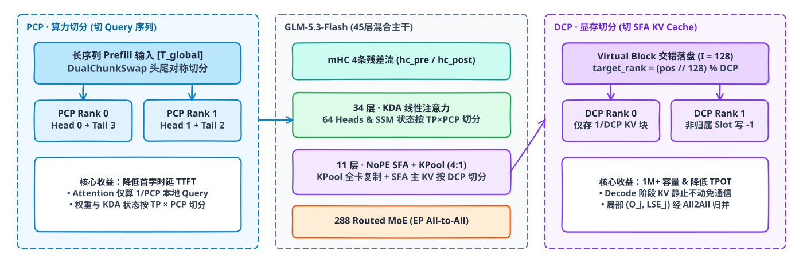
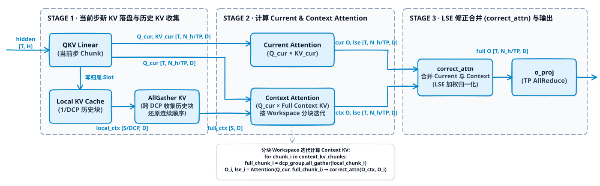
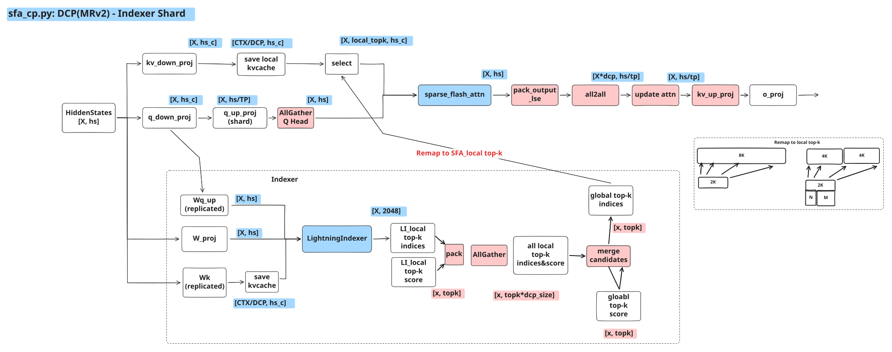

vLLM-Ascend 序列并行（PCP & DCP）
并行架构与 GLM-5.3-Flash 实现
目录
- 01 CP 核心机制与通信组拓扑
- 02 DCP：KV Cache 交错分片、Chunked Prefill 与 Sharded Indexer
- 03 PCP：DualChunkSwap 与异构层同步
- 04 PCP+DCP 叠加与 GLM-5.3-Flash 实现
- 05 适配矩阵、部署选型与演进规划
按 DualChunkSwap 头尾对称切分长 Prefill 输入序列，扩展 World Size 为 PCP × TP。
复用 PCP / TP 进程组，默认将所有 Attention KV Cache（含主 KV 与 Indexer）交错分片（1/DCP）。


交错映射公式（block_size % I == 0）
VBlock = block_size × DCP | target_rank = ((pos % VBlock) // I) % DCP
Attention KV 默认全切分 (AttentionSpec.dcp_sharded = True)
Full Attention、主 KV 及 Indexer 默认均按 DCP 切分；非序列状态按 Group 设为 False。

1. Query Gather / Replicate
跨 DCP 收集完整 Q Heads（DCP==PCP 时免通信）。
2. 无损 LSE 打包 All2All
Triton 打包 BF16 O_j 与 FP32 LSE_j 单次 All2All。
3. LSE 稳定加权归并
w_j = exp(L_j - max L) | O = Σ(w_j·O_j) / Σw_j

分块 Workspace 迭代 AllGather 历史 KV
按 lcm(block_size, I × DCP) 划窗收集历史 KV 并通过 kv_rank_offsets 还原连续顺序，控制单步通信峰值显存。
correct_attn 增量 LSE 合并
每次迭代算出的 (O_chunk, lse_chunk) 与前序结果及当前步 (O_cur, lse_cur) 按 LSE 权重精确归并。

1. 本地候选 Top-K 选择
LightningIndexer 对本卡 1/DCP 索引缓存选出 [X, topk]。
2. 跨卡归并全局 Top-K
打包 (indices, score) 跨 DCP AllGather 后归并出全局 [X, topk]。
3. Remap 本地 Select & All2All
过滤出落在本卡的 local_topk 读取主 KV，算完经 All2All 归并。
(Scheduler 统一调度)"] --> P["2. partition_batch
(拆为 2x 虚拟请求段)"] P --> R["3. _reorder_segments
(Decodes 在前, Prefills 在后)"] R --> CTX["4. AscendPCPAttentionContext
(Local Query + Global Cache 视图)"] CTX --> FWD["5. Model Forward
(跨 PCP 同步 KV / 局部 Attention)"] FWD --> REST["6. restore_for_sampling
(恢复全局 Token 顺序)"]
2x 虚拟请求展开
每个 Prefill 拆为 Head/Tail 两个独立 RankSegment，容量 2 * max_num_reqs
双向互逆映射表
padded_gather_idx 对齐 KV Slot；hidden_restore_idx 还原全局顺序
双视图上下文注入
Attention 同时获取 Local Query 偏移与 Global BlockTable / Slot Mapping
采样边界还原
restore_for_sampling 在 Runner 出口恢复完整序列供采样与 MTP 使用

2x 独立虚拟请求段 (RankSegment)
Head 与 Tail 作为两条独立虚拟请求行，各自携带真实 positions 与 num_computed_tokens。
短请求自动复制 (replicated_requests)
PCP+DCP 下若请求不够分满 2P 个 Chunk，自动全卡复制以保证集合通信步调一致。

1. 主 KV 与 Indexer 跨 CP 同步
kv_down_proj 与 Wk 经 AllGather CP 汇聚后写入 [CTX, hs_c]。
2. 本地 1/CP Query 稀疏注意力
LightningIndexer 选出 [X/CP, 2048]，从完整 KV select 计算注意力。
3. o_proj 两种模式与 SP 衔接
支持 AG weights (TP=1) 或 Slice heads + RS(SP) 衔接 LayerNorm / MoE。
按请求轮询分片（PCP > 1, DCP = 1）
当历史 KV Cache 在各 PCP Rank 上完整持有（DCP = 1）且模型无跨 PCP 切分状态时开启：
- 分配规则：按
owner_rank = decode_ordinal % PCP将不同 Decode 请求轮询分配到各 PCP Rank。 - MTP 约束：同一 Decode 请求的
K + 1个验证 Token 始终绑定在同一 Owner Rank。 - KV 同步：各卡仅计算
1 / PCP的 Decode 请求，每层产生的新 Token KV 跨 PCP AllGather 落盘。
全 Rank 复制调度（DCP > 1 或含跨卡状态）
当叠加 DCP > 1（历史 KV 跨卡分片）或包含跨 TP × PCP 切分的线性状态层时启用：
- 分配规则：所有 PCP Rank 接收相同的 Decode Query 序列（
replicated = True）。 - 注意力协同：各 Rank 拿相同的 Decode Query 读取本卡持有的
1 / DCP历史 KV 分片，经dcp_a2a_fused归并。 - 状态层推进：各 Rank 并行推进本卡负责的
1 / (TP × PCP)Recurrent State 分片。
| 维度 | Mode A：Decode Request Sharding | Mode B：Replicated Decode |
|---|---|---|
| 启用条件 | PCP > 1, DCP = 1 且无跨 PCP 状态层 |
DCP > 1 或含跨 TP × PCP 状态层 |
| 单卡 Decode 算力 | 分摊为 1 / PCP 请求数 |
各卡处理全量 Decode Token（KV 读取降为 1 / DCP） |
| 层内通信开销 | 每层 AllGather 新产生的 Decode KV 并写 Cache | 走标准 DCP 路径（AllGather Q + dcp_a2a_fused） |
词表权重跨 TP × PCP 切分
enable_pcp_embedding_lmhead_weight_sharding = True（默认开启）：大词表 Embedding 与 LM Head 权重按 TP × PCP 联合切分，适用于所有 Attention 后端。
o_proj 跨 PCP 权重/激活切分
enable_pcp_o_proj_weight_sharding = True（SFA/DSA 默认开启）：支持 TP=1 下临时 AllGather weights，或按 Head 切分后走 ReduceScatter (SP)。
线性层权重与状态扩维切分
通过 PCPColumnParallelLinear 与 PCPRowParallelLinear，将线性注意力（如 KDA）的投影权重与常驻 SSM 状态按 TP × PCP 切分。
| 显存组成项 | 纯 PCP 默认行为 | 开启 TP × PCP 切分后 |
进一步叠加 DCP 后 |
|---|---|---|---|
| Prefill 激活显存 | 降为 1 / PCP |
保持 1 / PCP（开启 SP 进一步降为 1 / (PCP×TP)） |
保持 1 / PCP |
| Embedding / LM Head / o_proj | 仅按 1 / TP 切分（PCP 间复制） |
按 1 / (TP × PCP) 切分 |
按 1 / (TP × PCP) 切分 |
| Attention 主 KV Cache | 各 PCP Rank 完整保存（1 / TP） |
各 PCP Rank 完整保存（1 / TP） |
按 1 / DCP 交错分片（最高 TP×PCP） |
1. 通信拓扑与 KV 落盘规则
- PCP-first 转置建组：逻辑 DCP 按
flat_idx = tp_rank * PCP + pcp_rank组建（先跨 PCP，再跨 TP）。 - HCCL 排序映射：通过
dcp_collective_rank_order对齐物理 ProcessGroup 顺序。 - 单次掩码落盘：仅满足
(pos // I) % DCP == dcp_rank的 Token 写物理 Slot，其余置-1。
2. Stacked Prefill 协同
- 当前步新 KV：
build_pcp_ordered_slot_mapping按padded_gather_idx重排全局 Slot 并过滤 Padding。 - 历史 Cached KV：基于
global_batch生成统一的跨 DCP AllGather 发送上界，接收后按本地 Segment 区间消费。 - 本地 Query 计算：各卡仅计算
1 / PCP本地 Query Token。
3. Stacked Decode 两级归并
DCP == PCP：同组各卡 Q Heads 已完全一致，免除 AllGather Q，算完直接跨 PCP 归并(O, LSE)。DCP == TP × PCP：仅在tp_group内 AllGather Q Heads；输出经dcp_a2a_fused(..., tp_group, pcp_group)一步完成跨 TP Scatter 与跨 PCP LSE 归并。
| 叠加配置 | 通信组划分 (以 4 卡为例) | Decode Query Gather 范围 | Decode 输出 LSE 归并路径 |
|---|---|---|---|
| DCP = PCP (如 TP=2, PCP=2, DCP=2) |
TP: [0,1], [2,3] PCP / DCP: [0,2], [1,3] |
无需 AllGather Q（同 PCP 组持有相同 TP Head 分片） | dcp_a2a_fused 仅在 pcp_group 内交换并归并 LSE |
| DCP = TP × PCP (如 TP=2, PCP=2, DCP=4) |
Logical DCP: [0, 2, 1, 3] HCCL Sorted: [0, 1, 2, 3] |
仅在 tp_group 内 AllGather Q（通信量降为 1/PCP） |
dcp_a2a_fused(tp_group, pcp_group) 两级融合归并 |
KDA 线性注意力
64 Heads 与 SSM 状态按 TP×PCP 切分；Prefill 先 AllGather 还原因果顺序，输出经 ReduceScatter 切回本地。
KPool 4:1 索引器
压缩池与 FP32 Tail Ring 全卡复制；Prefill 用 all_gather_async 重叠本地 Query 投影，选 Top-2051。
NoPE SFA 主注意力
512 维 Latent KV 按 DCP 交错切分（1/DCP）；Decode 用 sparse_index_remap + dcp_a2a_fused。
mHC & EP MoE
4 条残差流与 288 专家 MoE 保持在 PCP 本地视图 [T_local, 4096] 上执行，与 EP All2All 正交。
| Cache Group | 对应模块 | 单 Token 规格 | PCP 行为 (Prefill) | DCP 行为 (Storage) |
|---|---|---|---|---|
| Group 0 · SFA Main KV | 11 层 SFA (+MTP) | Latent 512 (BF16/INT8/FP8) | PCP Gather 后按 Owner 写入 | DCP 交错分片 (1/DCP) |
| Group 0/1 · KPool & Tail | 11 层 Indexer (4:1 + Ring) | 128 dim / 4 tokens + FP32 Tail | 异步 Gather 还原全局顺序写 | 全卡复制 (Replicated) |
| Group 2~4 · KDA State | 34 层 KDA (12+11+11) | Conv (BF16) + SSM (BF16/FP32) | Gather 还原因果顺序推进 | 按 TP × PCP 切分 Heads |
1. Prefill Context Parallel (PCP)
切分 Prefill 计算序列（2P DualChunkSwap）
| Attention 后端 / 代表模型 | Basic PCP | APC + Chunked | Graph Mode | Speculative | P/D 分离 | KV Pool |
|---|---|---|---|---|---|---|
| MLA (DeepSeek-V3 / R1) | ||||||
| SFA (GLM-5.2) | ||||||
| KDA + SFA/KPool (GLM-5.3-Flash / K3.1) | ||||||
| DSA & DSA V4.1 (DeepSeek-V4) | ||||||
| GQA (Qwen3 系列) |
2. Decode Context Parallel (DCP)
跨卡交错切分 KV Cache 容量（1 / DCP）
| Attention 后端 | 拓扑约束 (Standalone / Stacked) | Chunked + APC | Graph Mode | Speculative | P/D & KV Pool | PCP + DCP |
|---|---|---|---|---|---|---|
| MLA (DeepSeek-V3 / R1) | TP % DCP == 0 或 DCP ∈ {PCP, TP×PCP} |
|||||
| SFA (GLM-5.2 / 5.3-Flash / K3.1) | DCP == TP 或 DCP ∈ {PCP, TP×PCP} |
|||||
| GQA / MQA (Qwen3 等) | 必须保持 DCP = 1 |
Prefill 阶段选型策略
- 常规长序列（优化 TTFT）：稀疏注意力模型通常开启 PCP（DualChunkSwap 头尾对称切分），切分 Prefill 计算序列以压降首字时延 TTFT。
- 超长序列或 KV Cache 容量受限：在开启 PCP 的基础上同步开启 DCP（
PCP + DCP），跨卡交错切分主 KV Cache 释放显存容量。
Decode 阶段选型策略
- 中短序列场景：优先采用标准 DP / TP 部署，无需开启 CP，避免额外跨卡集合通信开销。
- 长序列场景（优化容量与 TPOT）：使用
TP + DCP交错切分历史 KV Cache 释放显存容量，同时将单卡每步 KV HBM 访存带宽降至1 / DCP以优化 TPOT。
未来演进规划（Roadmap）
NEXT STEPS1. Indexer 切分泛化（K3.1 Pro → GLM-5.3）
将 Sharded Indexer（跨 DCP 切分 Indexer Cache + distributed_topk 候选归并）从 K3.1 Pro 的 LightningIndexer 泛化适配至 GLM-5.3（KPool Indexer），消除长序列下 Indexer Cache 的全卡复制开销。
2. 动态 CP（Dynamic Context Parallel）
支持根据请求的实际序列长度与系统 KV 负载动态调整 CP 并行度与执行路径：中短序列走无 CP / 低并行度路径免除通信开销，长序列按需动态启用 PCP / DCP。
| 功能域 | 核心文件路径 (vllm / vllm-ascend) | 关键类 / 算子 | 源码 |
|---|---|---|---|
| 通信组拓扑 | vllm/distributed/parallel_state.py | _DCP, _PCP (PCP-first 转置) |
|
| MRV2 PCP 切分 | vllm/v1/worker/gpu/pcp_manager.py vllm_ascend/worker/v2/pcp_manager.py |
PCPManager, AscendPCPManager |
|
| DCP Slot Mapping | vllm_ascend/worker/v2/block_table.py vllm_ascend/ops/triton/block_table/compute_slot_mappings.py |
AscendBlockTables, _compute_slot_mappings_kernel |
|
| DCP Mixin & A2A | vllm_ascend/attention/context_parallel/common_cp.py vllm_ascend/ops/triton/dcp/dcp_a2a.py |
DCPImplMixin, dcp_a2a_fused |
|
| SFA / Sharded Indexer | vllm_ascend/attention/context_parallel/{sfa_cp,sharded_indexer}.py vllm_ascend/attention/indexer.py |
AscendSFADCPImpl, distributed_topk |
|
| GLM-5.3 KDA & KPool | vllm_ascend/models/glm5next/kda.py vllm_ascend/attention/indexer_kpool.py |
Glm5NextLinearAttention, Glm5NextKPoolIndexerBackend |